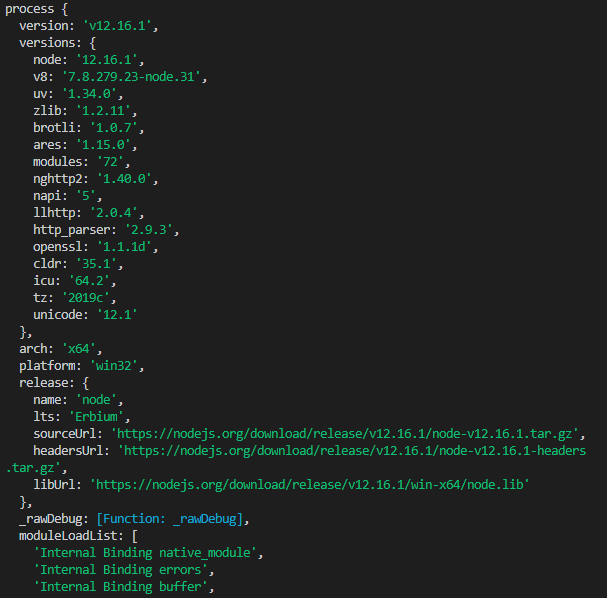
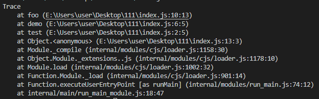

Node. js 有哪些全局对象？
参考答案
一、是什么
在浏览器 JavaScript 中，通常 window 是全局对象， 而 Nodejs 中的全局对象是 global
在NodeJS里，是不可能在最外层定义一个变量，因为所有的用户代码都是当前模块的，只在当前模块里可用，但可以通过exports对象的使用将其传递给模块外部
所以，在NodeJS中，用var声明的变量并不属于全局的变量，只在当前模块生效
像上述的global全局对象则在全局作用域中，任何全局变量、函数、对象都是该对象的一个属性值
二、有哪些
将全局对象分成两类：
- 真正的全局对象
- 模块级别的全局变量
真正的全局对象
下面给出一些常见的全局对象：
- Class:Buffer
- process
- console
- clearInterval、setInterval
- clearTimeout、setTimeout
- global
Class:Buffer
可以处理二进制以及非Unicode编码的数据
在Buffer类实例化中存储了原始数据。Buffer类似于一个整数数组，在V8堆原始存储空间给它分配了内存
一旦创建了Buffer实例，则无法改变大小
process
进程对象，提供有关当前过程的信息和控制
包括在执行node程序的过程中，如果需要传递参数，我们想要获取这个参数需要在process内置对象中
启动进程：
node index.js 参数1 参数2 参数3index.js文件如下：
process.argv.forEach((val, index) => {
console.log(`${index}: ${val}`);
});输出如下：
/usr/local/bin/node
/Users/mjr/work/node/process-args.js
参数1
参数2
参数3除此之外，还包括一些其他信息如版本、操作系统等

console
用来打印stdout和stderr
最常用的输入内容的方式：console.log
console.log("hello");清空控制台：console.clear
console.clear打印函数的调用栈：console.trace
function test() {
demo();
}
function demo() {
foo();
}
function foo() {
console.trace();
}
test();

clearInterval、setInterval
设置定时器与清除定时器
setInterval(callback, delay[, ...args])callback每delay毫秒重复执行一次
clearInterval则为对应发取消定时器的方法
clearTimeout、setTimeout
设置延时器与清除延时器
setTimeout(callback,delay[,...args])callback在delay毫秒后执行一次
clearTimeout则为对应取消延时器的方法
global
全局命名空间对象，墙面讲到的process、console、setTimeout等都有放到global中
console.log(process === global.process) // true模块级别的全局对象
这些全局对象是模块中的变量，只是每个模块都有，看起来就像全局变量，像在命令交互中是不可以使用，包括：
- __dirname
- __filename
- exports
- module
- require
__dirname
获取当前文件所在的路径，不包括后面的文件名
从 /Users/mjr 运行 node example.js：
console.log(__dirname);// 打印: /Users/mjr__filename
获取当前文件所在的路径和文件名称，包括后面的文件名称
从 /Users/mjr 运行 node example.js：
console.log(__filename);// 打印: /Users/mjr/example.jsexports
module.exports 用于指定一个模块所导出的内容，即可以通过 require() 访问的内容
exports.name = name;exports.age = age;exports.sayHello = sayHello;module
对当前模块的引用，通过module.exports 用于指定一个模块所导出的内容，即可以通过 require() 访问的内容
require
用于引入模块、 JSON、或本地文件。 可以从 node_modules 引入模块。
可以使用相对路径引入本地模块或 JSON 文件，路径会根据__dirname定义的目录名或当前工作目录进行处理
作答思路：
在Node.js中，全局对象是所有代码都可以访问的对象，它们在Node.js启动时被创建。以下是一些重要的全局对象：
- global：代表当前的全局对象。
- module：代表当前模块。
- exports：代表模块的导出对象。
- require：用于加载模块。
- process：代表当前Node.js进程。
- console：用于输出信息到控制台。
- Buffer：用于操作二进制数据的类。
- setTimeout、
setInterval、clearTimeout、clearInterval：用于设置和清除定时器。 - setImmediate、
clearImmediate：用于异步执行回调函数。 - setImmediate、
clearImmediate：用于异步执行回调函数。
考察要点：
- 全局对象概念：理解全局对象的作用和用途。
- 常用全局对象：了解Node.js中常用的全局对象及其功能。